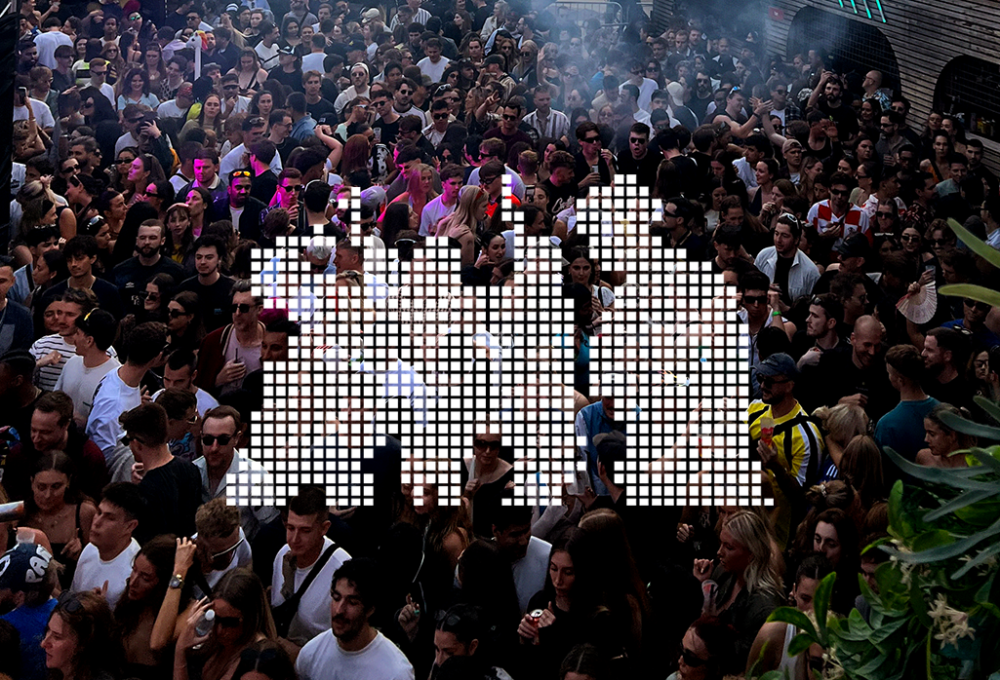
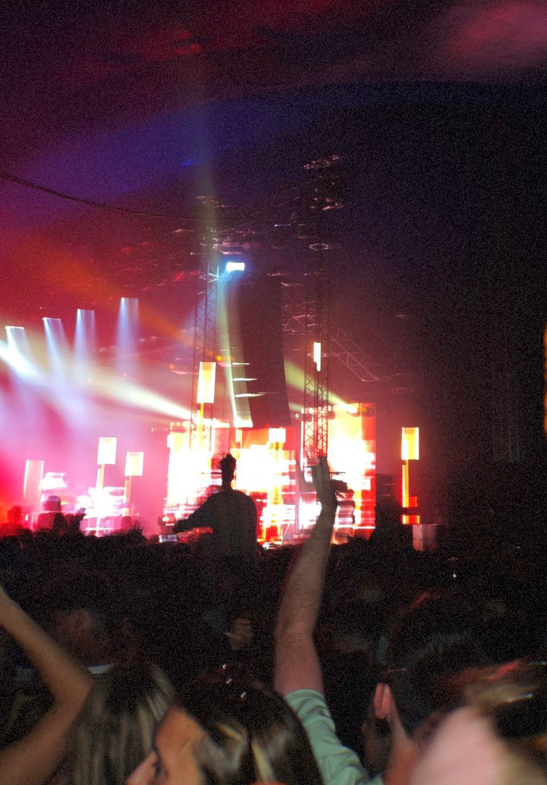
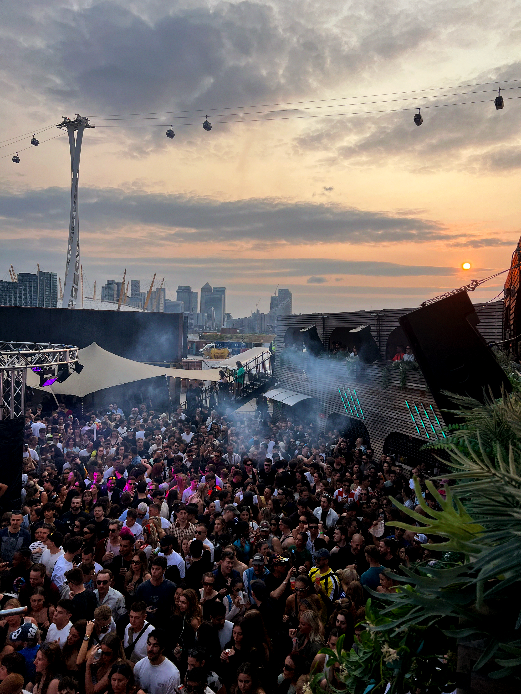
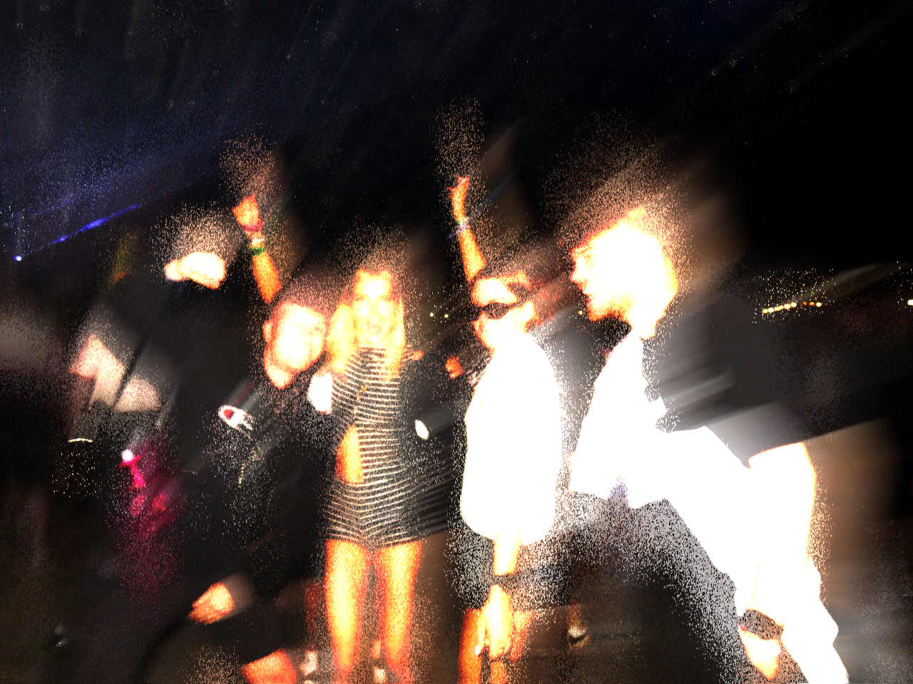
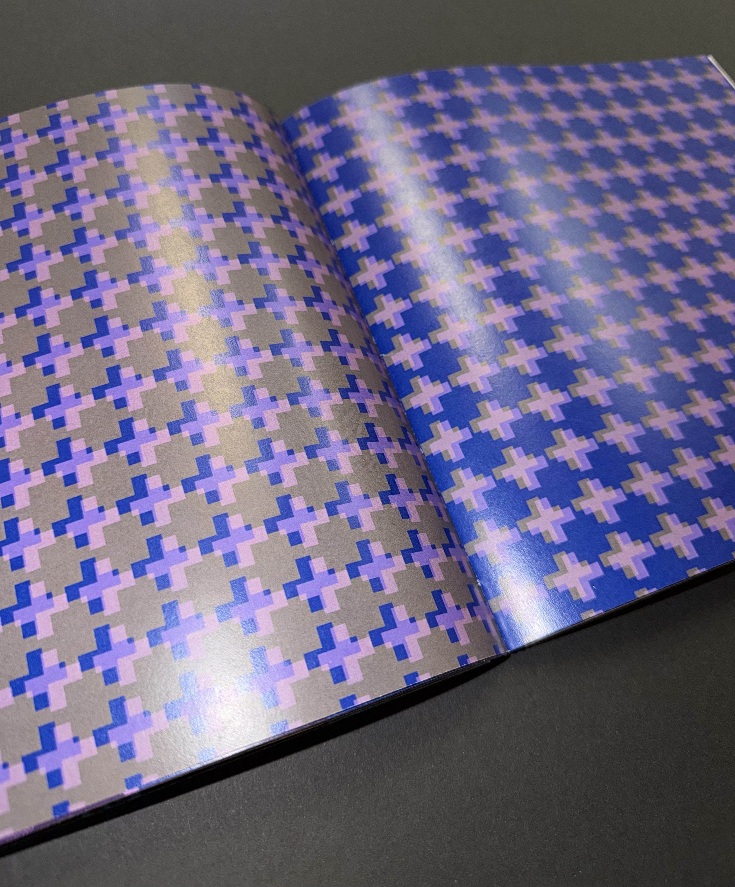
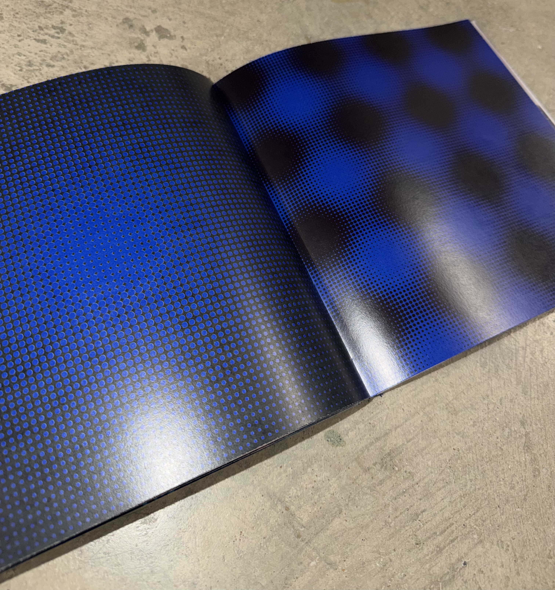
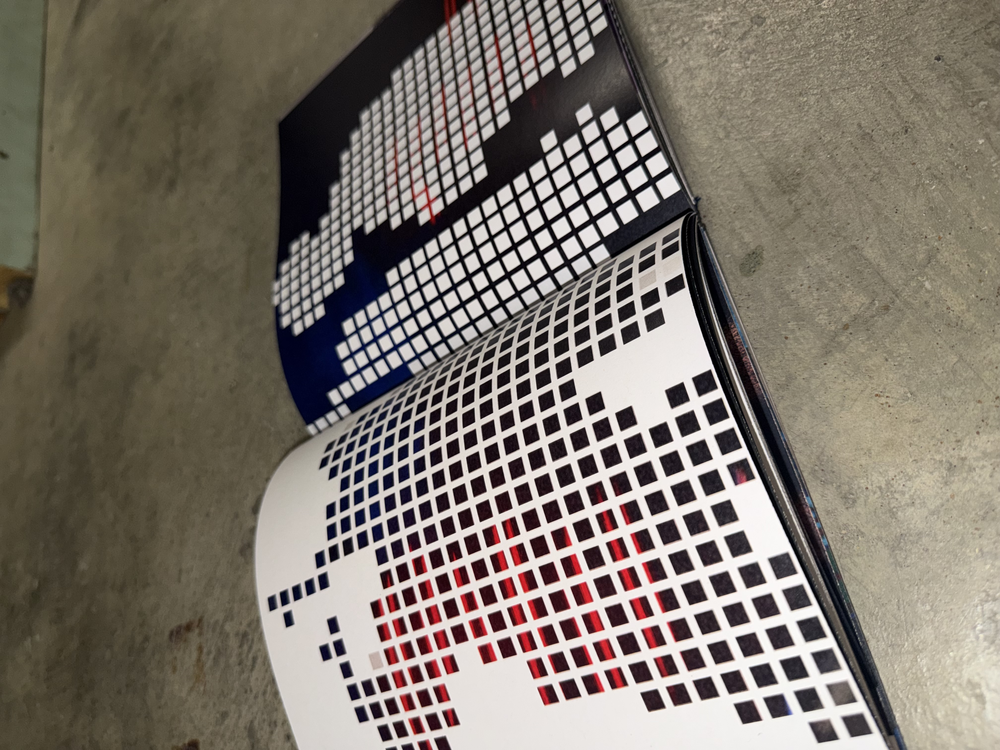
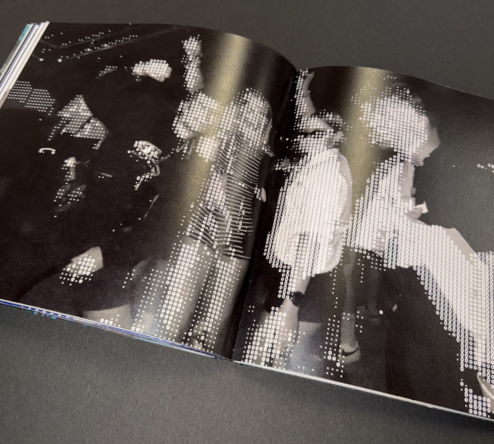

An Ode to the Dancefloor
Creative Coding | Generative Design | Experimental Systems
A computational textile design project inspired by the collective energy of rave culture. Through creative coding, projection, print, and material experimentation, I explore how movement, rhythm, and shared experience can be translated into dynamic visual and textile outcomes.


Concept
Dancefloors are temporary environments where sound, light, and movement merge to create a constantly evolving atmosphere. This project investigates how this can be captured through algorithmic processes, transforming the flow of crowds into patterns and animations.



Primary research through photography at raves and live music events documented movement, light, texture and crowd interaction. These observations informed a visual language of repetition, distortion, layering and rhythm, which shaped my computational experiments.

Material Exploration
I explored rave culture through hands-on material experimentation, using paper weaving, laser cutting and screen printing to translate rhythm, repetition and movement into tactile textures and layered compositions.
Using p5.js and TouchDesigner, I translated the physical experiments into algorithmic patterns, distorted imagery and animated visuals, extending the project into digital format.
Mouse-ReactiveTouch-Reactive p5.js Sketches
The following visuals are mouse-reactive sketches created in p5.js. Moving the cursor through each composition distorts the dot patterns, creating shifting rhythms that echo the movement and energy of the dancefloor.
The following visuals are touch-reactive sketches created in p5.js. Touch and drag across each composition to distort the dot patterns, creating shifting rhythms that echo the movement and energy of the dancefloor.
Projection became a way of bringing my generative designs to life, allowing patterns to shift and evolve across physical surfaces. This reinforced the project's focus on movement, rhythm, and immersive visual experiences.
Outcomes
The final outcomes include a hand bound publication documenting my digital designs and generative patterns. The designs were also visualised across a range of applications, demonstrating how computational textiles can exist across both physical and digital environments.




Using patterns derived from movement and rhythm I translate digital outputs into a design associated with music culture and dancefloor experiences.
VISUALISING MY DESIGNS WITHIN A SPACE
Architecture becomes the projection surface, allowing a strong contrast between industrial structure and fluid digital patterns.